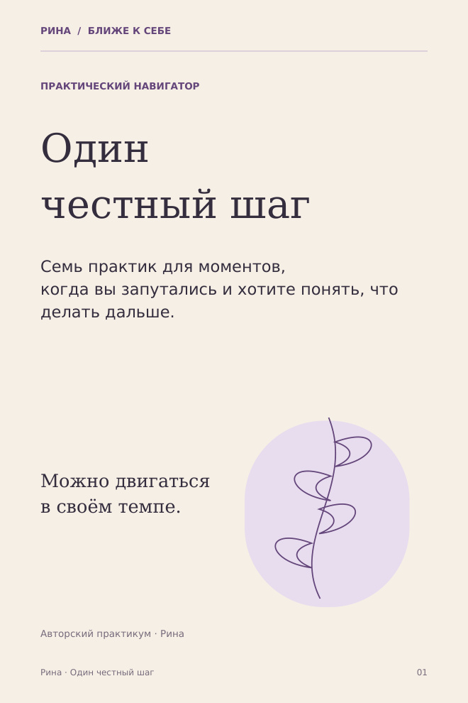

ПРАКТИЧЕСКИЙ НАВИГАТОР
Один
честный шаг.
Для моментов, когда вы многое понимаете, но пока не знаете, что делать дальше.
Выберите одну из семи ситуаций, разберите пример и составьте своё небольшое действие. Можно остановиться на одной практике.
790 ₽ за весь комплект
Оплата на сайте пока не подключена. Кнопка откроет переписку с Риной, без списания денег.

ЧТО ВНУТРИ
Не нужно разбирать
всю жизнь сразу.
Семь знакомых ситуаций
- Не понимаю, чего хочу.
- Не могу принять решение.
- Сомневаюсь в отношениях.
- Хочу перемен, но страшно.
- Устала быть сильной.
- Откладываю важное.
- Всё нормально, но будто не моё.
На выходе из практики
Ваша запись: что происходит, что вам важно, какой шаг вы выбираете, когда попробуете и как оцените результат.
В комплекте есть заполненный пример, общая карточка эксперимента, вопросы для возвращения через 72 часа и короткая практика паузы.
14 страниц. Самостоятельная работа без отчётов и обязательных домашних заданий. Примерное время одной практики — 20–30 минут.
Перед покупкой
Чем это отличается от бесплатной карты?
Бесплатная карта помогает заметить тему, которой хочется уделить внимание. Навигатор даёт отдельные практики под жизненные ситуации: вопросы, пример, действие и способ вернуться к результату.
Это консультация или курс?
Это PDF для самостоятельного использования. Личная сессия, аудио, проверка ответов и сопровождение в стоимость не входят.
Нужно ли распечатывать?
Нет. Можно читать с телефона и записывать ответы в заметках. Поля в PDF предназначены для записей на распечатке или разметки в приложении для PDF.
Каких обещаний здесь нет?
Материал не ставит диагноз, не измеряет активность мозга и не гарантирует решения проблемы. Он не предназначен для кризисных ситуаций и не заменяет индивидуальной профессиональной помощи.
Как сейчас получить полный файл?
Напишите Рине в Telegram: «Хочу навигатор “Один честный шаг”». Условия оплаты и получения согласуются до покупки. Автоматическая оплата и выдача на сайте пока недоступны.